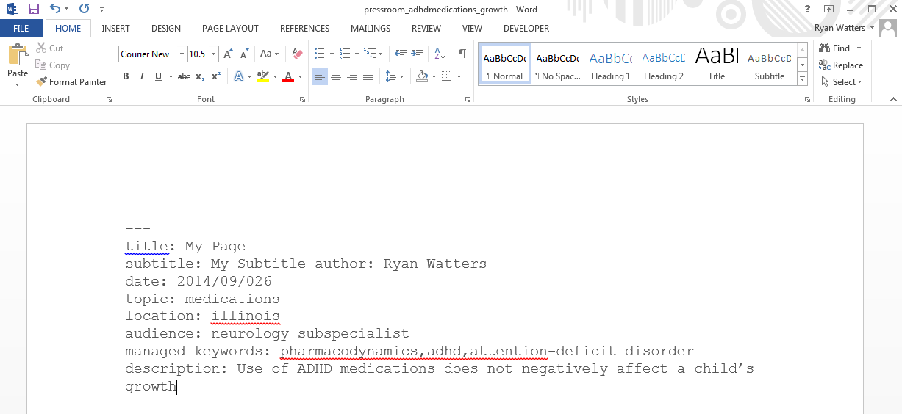
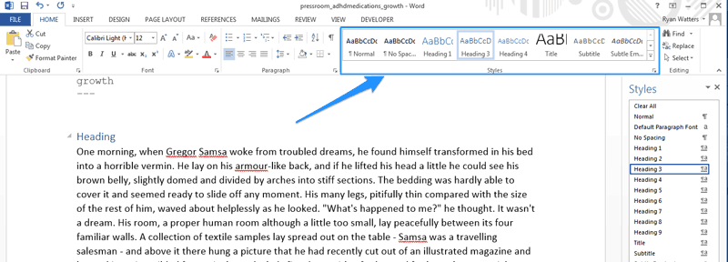
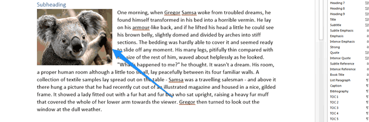

This short tutorial will show you how to create your web/article pages using Microsoft Word 2013.
Creating Your Front Matter
To create your front matter, go to the front matter generator found on this site. The tagging section will help you look through the existing tagging structure for AAP.org if you can't find what you're looking for.
Once you've copied your front matter for the web page, paste it into the top of the Word document.

Note: If there are special permissions for any of these pages (i.e., the page is "gated" [for members only]), please let us know by adding a note to the margin of the Word document. You can also add this to the front matter at the top of the page.
Setting up Page Styles in Word
Inline page styles (ie, bold and italics, bulleted lists) should carry over from Word to SharePoint 2013. However, the following will not transfer:
- Text manually set in different font sizes rather than via page styles
- Text with colors outside the AAP.org color palette; (these styles are predetermined by the site's CSS stylesheet)
- Paragraphs are going to transfer to SharePoint in the same font, weight, and size, regardless of the formatting applied through Word.
This is why you'll need to use Word's predefined styles when creating headings. If this is your first time creating a page in Word, you'll need to set up your page styles.
Click on the small expand arrow at the bottom left of the styles section within the "Home" tab of the ribbon. You should see a popout menu to the right of your document. Selection "Options..."

A "Style Pane Options" modal should pop up. Select "All styles" under "Select styles to show:" and make sure that "Show next heading when previous level is used" is unchecked.

You should now have "Heading 3" and "Heading 4" readily available in both "Styles" panes: to the right of your document and in the ribbon on top.
Just one more quick modification. If you notice that "Heading 4" styles text to be italicized, you will need to remove this formatting. Select "Heading 4" in the styles pane and then from the dropdown that appears, select "Modify."

You should see the following "Modify Style" popup. Deselect the "I." Make sure "Automatically update" and "New documents based on this template" are both selected and then press OK."
Note: You may have to select these options more than once if you are using multiple templates within Word.

Headings
You'll notice that the headings 3 and 4 are available in both panes.

You will use "Heading 3" and "Heading 4" for the heading and subheadings in your web page, respectively. As you write your document, highlight the heading and select the corresponding heading style from either stylepane.

Images
All images need to be submitted separately from the actual web pages since they will live in a separate image library. They also need to follow both the new naming conventions and image standards before being submitted as new content or added to your image library for your migration. However, you can add images to your Word document to let editorial know where you'd like them placed within the page.

Tables
You can create tables in your Word document to be added to your web pages. However, remember that AAP.org is now responsive—content adjusts according to screen size—so tables with more than 2 to 3 columns often become illegible on smart phones or smaller tablets.